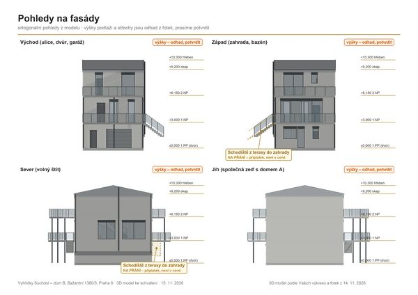
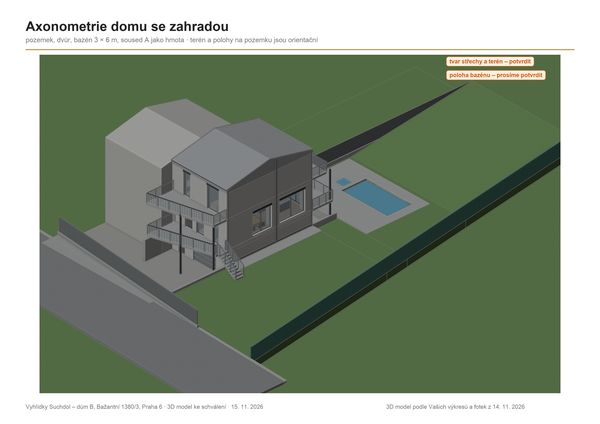
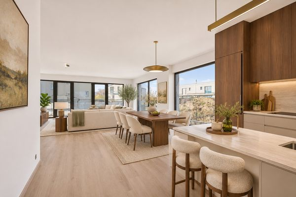
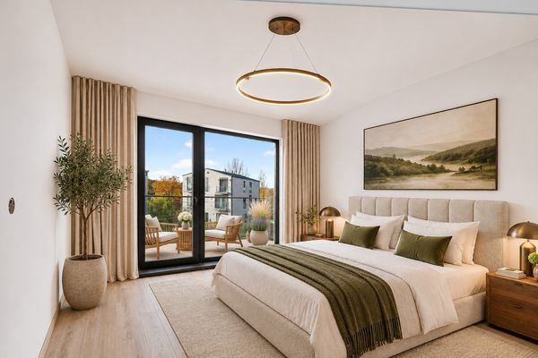
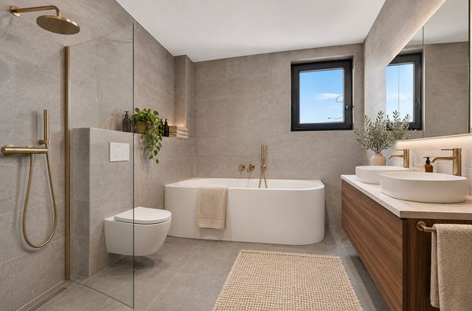
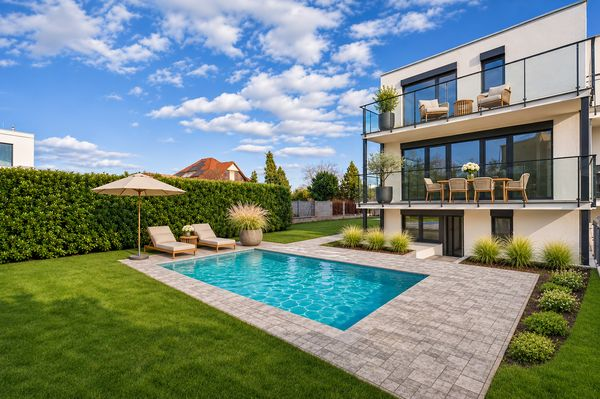
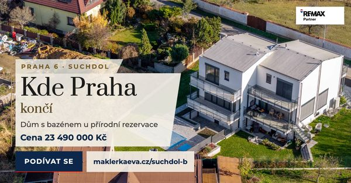
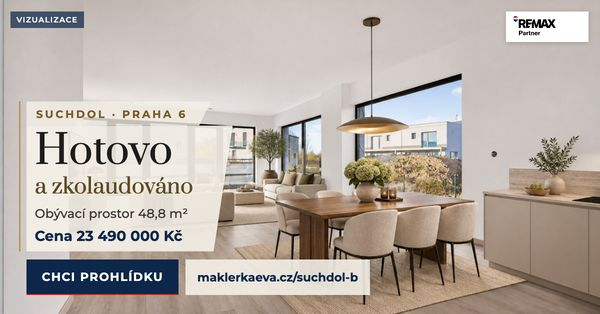

Půdorys 1.PP
Nábytek podle Vašich výkresů.
Dobrý den, pane Sládku, posíláme 3D model domu B a vizualizace k videu. U každé části prosíme o souhlas, nebo napište, co upravit. Co je zatím náš odhad, je označené. Na konci klikněte na Odeslat.
Co od Vás potřebujeme: jen se podívat, případně napsat připomínku.
Skutečné fotky domu z listopadu 2026, bez úprav vzhledu domu. Klepnutím fotku zvětšíte, šipkami nebo přejetím prstu listujete.
Na obou fotkách balkonu jsme ze snímku jen vyretušovali odložený žebřík a drobný stavební nepořádek. Ochranná fólie na zábradlí je skutečný stav.
Co od Vás potřebujeme: zkontrolovat a dát Souhlasí nebo Upravit.
Model otočíte tažením prstu nebo myši, přiblížíte kolečkem myši nebo dvěma prsty.
Nábytek podle Vašich výkresů.

Nábytek podle Vašich výkresů.

Nábytek podle Vašich výkresů.



Co od Vás potřebujeme: zkontrolovat popisky a dát Souhlasí nebo Upravit.
Takhle to ukážeme ve videu. Prosíme, zkontrolujte popisky.
Co od Vás potřebujeme: u každého obrázku dát Souhlasí nebo Upravit.
Vizualizace – návrh zařízení, není součástí dodávky.

Vizualizace Vizualizace
Vizualizace Vizualizace
Vizualizace
Vizualizace Vizualizace
Vizualizace Vizualizace
Vizualizace
Vizualizace Vizualizace
Vizualizace Vizualizace
Vizualizace Vizualizace
Vizualizace
Vizualizace Vizualizace
Vizualizace Vizualizace
Vizualizace Vizualizace
VizualizaceCo od Vás potřebujeme: otevřít web domu, projít ho a případně napsat připomínku.
Připravili jsme náhled webu domu B. Otevře se v novém okně, po prohlédnutí se sem stačí vrátit.
Otevřít web domu B (náhled)Co od Vás potřebujeme: vybrat jednu možnost.
Navrhujeme začít hned a běžet do 20. 12. Reklamu ukážeme lidem, kteří v Praze hledají dům, na Googlu, na webech a na YouTube. Platíte jen samotnou reklamu – její nastavení, hlídání a report každé pondělí zajišťujeme my.

příroda a údolí hned za domem, a přitom Praha 6.
vlastní zahrada s bazénem, 5+kk, 178 m².

co je v ceně a co si můžete přidat (3D model).
Kde se reklama ukáže: vyhledávání Google · weby a aplikace (bannery) · YouTube (video, až bude hotové).
Částky jsou bez DPH a jsou strop – víc se neutratí. Rozpočet můžeme kdykoli změnit.
Co od Vás potřebujeme: napsat krátkou odpověď, kolik víte (u čeho nevíte, nechte prázdné).
Je místo pro saunu v technickém koutě garáže vedle kotle?
Bude u domu B? Kde a kdy?
Kde přesně pod domem je a jak je velká?
V podkladech je 13,7 m², z výkresu nám vychází menší. Která plocha platí?
Je to technický poklop, který zůstane?
Je to videotelefon u branky, nebo i kamery?
Na web domu chystáme jednoduchý konfigurátor (co je v ceně a co na přání). Smíme u položek na přání uvádět ceny, které jste nám poslal (např. tepelné čerpadlo, fotovoltaika, žaluzie, zastřešení bazénu)?
Co od Vás potřebujeme: poslat výkresy odpovědí na náš e-mail (nic zde nevyplňujete).
Stačí PDF, ideálně i DWG.
Co od Vás potřebujeme: případně doplnit poznámku a dole kliknout na Odeslat.